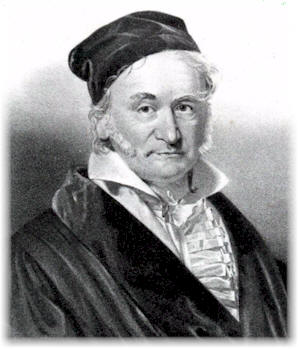
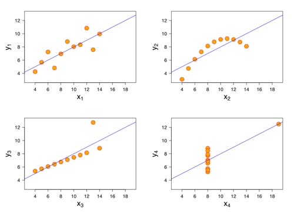

Linear regression, famously used by Gauss in 1809 to predict the location of Ceres, is the ur-model of supervised learning.
Suppose $A \in \mathbb{R}^{m \times n}$ with $m \neq n$ and $y \in \mathbb{R}^m$ is a given vector. Find $x \in \mathbb{R}^n$ such that $y = Ax$. $$ $$ However if no $x$ satisfies the equation or more than one $x$ does -- that is the solution is not unique -- the problem is said not to be well posed.
The standard approach in the (overdetermined) case where $m > n$ is linear least squares linear regression. $$ $$ In this situation the linear system $Ax = y$ is not solvable for most values of $y$. $$ $$ The linear least squares problem poses an approximate solution in the following constrained optimization problem:
$$ \min_{b \in \mathcal{Im}(A)} \|y - b\|^2 $$
The SVD gives us a nice way of studying linear systems $Ax = y$ where the matrix is not invertible. $$ $$ In this case $A$ has a generalized inverse called the Moore-Penrose psuedoinverse (denoted $A^+$). $$ $$ The Moore-Penrose psuedoinverse is defined for any real-valued matrix $A$, and corresponds to the normal inverse $A^{-1}$ when $A$ is invertible.
We write $\oplus$ for the direct sum of inner product spaces, $\perp$ for the orthogonal complement, $\mathcal{Ker}$ for the kernel of a map, and $\mathcal{Im}$ for the image of a map. $$ $$ If we view the matrix as a linear map $A :\mathcal{X} \to \mathcal{Y}$ then $A$ decomposes the two spaces as follows:
\begin{align} \mathcal{X} &= \mathcal{Ker}(A )^\perp \oplus\mathcal{Ker}(A ) \newline \mathcal{Y} &= \mathcal{Im}(A )^\perp \oplus\mathcal{Im}(A ) \end{align}
The restriction $A : \mathcal{Ker}(A )^\perp \to \mathcal{Im}(A)$ is then an isomorphism. $$ $$ $A^+$ is defined on $ \mathcal{Im}(A)$ to be the inverse of this isomorphism, and on $ \mathcal{Im}(A)^\perp$ to be zero. $$ $$ Therefore for $y \in \mathcal{Im}(A)$, $A^+y$ is the unique vector $x$ such that $y = A(x)$ and $x \in \mathcal{Ker}(A)^\perp$.
This construction gives us the following nice properties for $A^+$:
\begin{align}
\mathcal{Ker}(A^+) &= \mathcal{Im}(A)^\perp
\newline
\mathcal{Im}(A^+) & = \mathcal{Ker}(A)^\perp
\end{align}
What is the pseudoinverse of $X$?
$$ X = \begin{pmatrix} 1 & 0 & 0 \\ 0 & 2 & 0 \\ \end{pmatrix} $$
Theorem (Analytic Characterization): Let $A \in \mathbb{R}^{n \times m}$. Then
$$
A^+ = \lim_{\lambda \to 0} (A^TA + \lambda I)^{-1} A^T
$$
This characterization (known as Tikhonov regularization) leads to an iterative method for computing $A^+$ (see Ben-Israel and Cohen).
note the connection to ridge regression.
Find the pseudoinverse of $A$ by checking the conditions of the above theorem.
$$ A = \begin{pmatrix} 1 & 1 \\ 1 & 1 \\ \end{pmatrix} $$
\begin{split}
A^+ &= \lim_{\lambda \to 0} (A^TA + \lambda I)^{-1} A^T
\newline
&= \lim_{\lambda \to 0}
\begin{pmatrix}
2+\lambda & 2 \\
2 & 2+\lambda \\
\end{pmatrix} ^ {-1}
\begin{pmatrix}
1 & 1 \\
1 & 1 \\
\end{pmatrix}
\newline
&= \lim_{\lambda \to 0} \frac{1}{\lambda(\lambda+4)}
\begin{pmatrix}
2+ \lambda & -2 \\
-2 & 2 + \lambda \\
\end{pmatrix}
\begin{pmatrix}
1 & 1 \\
1 & 1 \\
\end{pmatrix}
\newline
&= \lim_{\lambda \to 0} \frac{1}{\lambda(\lambda+4)}
\begin{pmatrix}
\lambda & \lambda \\
\lambda & \lambda \\
\end{pmatrix}
\newline
&= \lim_{\lambda \to 0} \frac{1}{\lambda+4}
\begin{pmatrix}
1& 1 \\
1 & 1\\
\end{pmatrix}
\newline
&= \frac{1}{4}
\begin{pmatrix}
1 & 1 \\
1 & 1\\
\end{pmatrix}
\end{split}
We can also define $A^+$ for all $A \in \mathbb{R}^{n \times m}$ according to purely algebraic criteria. $$ $$ Theorem (Algebraic Characterization): Let $A \in \mathbb{R}^{m \times n}$. Then $G = A^+$ if and only if:
Furthermore, $ A^+$ always exists and is unique. Note also that when an true $A^{-1}$ exists it satisfies the above properties.
A conceptually simpler way to compute the pseudoinverse is by using the SVD of $A$. $$ $$ If $A = U\Sigma V^T$ is the singular value decomposition of $A$ then $A^+ = V\Sigma^+ U^T$. $$ $$ For a rectangular diagonal matrix such as $\Sigma$, we can easily get the pseudoinverse by taking the reciprocal of each non-zero element on the diagonal, leaving the zeros in place, and then transposing the matrix, as in the Exercise above.
In numerical computation, only elements larger than some small tolerance are taken to be nonzero, and the others are replaced by zeros.
Lets compute psuedoinverse using the SVD of the matrix $X$ from the last lecture.
$$ X = \begin{pmatrix} 1 & 2 \\ 2 & 1 \\ 3 & 4 \\ 4 & 3 \\ \end{pmatrix} $$
We saw that the SVD of $X$ is: $$ \begin{pmatrix} 1 & 2 \\ 2 & 1 \\ 3 & 4 \\ 4 & 3 \\ \end{pmatrix} = \begin{pmatrix} \frac{3}{\sqrt{116}} & \frac{1}{2} \\ \frac{3}{\sqrt{116}} & -\frac{1}{2} \\ \frac{7}{\sqrt{116}} & \frac{1}{2} \\ \frac{7}{\sqrt{116}} & -\frac{1}{2} \\ \end{pmatrix} \begin{pmatrix} \sqrt{58} & 0 \\ 0 & \sqrt{2} \\ \end{pmatrix} \begin{pmatrix} \frac{1}{\sqrt{2}} & \frac{1}{\sqrt{2}} \\ -\frac{1}{\sqrt{2}} & \frac{1}{\sqrt{2}} \\ \end{pmatrix} $$
Therefore the pseudoinverse $X^+$ is:
\begin{split} X^+ &= \begin{pmatrix} \frac{1}{\sqrt{2}} & -\frac{1}{\sqrt{2}} \\ \frac{1}{\sqrt{2}} & \frac{1}{\sqrt{2}} \\ \end{pmatrix} \begin{pmatrix} \frac{1}{\sqrt{58}} & 0 \\ 0 & \frac{1}{\sqrt{2}} \\ \end{pmatrix} \begin{pmatrix} \frac{3}{\sqrt{116}} & \frac{3}{\sqrt{116}} & \frac{7}{\sqrt{116}} & \frac{7}{\sqrt{116}} \\ \frac{1}{2} & -\frac{1}{2} & \frac{1}{2} & -\frac{1}{2} \\ \end{pmatrix} \newline &= \frac{1}{58} \begin{pmatrix} -13 & 16 & -11 & 18 \\ 16 & -13 & 18 & -11 \\ \end{pmatrix} \end{split}
Note that both the SVD and the Moore-Penrose psuedoinverse have poor sparsity properties. $$ $$ As such, these methods have limited utility for very large matrices.
The following special case will be useful in solving the linear least squares problem. $$ $$ Proposition: If $A$ is injective (e.g. $A$ is full rank and $m \geq n$), then $A^+ = (A^TA)^{-1} A^T $ $$ $$ The proof follows from the algebraic criteria above and the fact that $A^TA$ is a positive definite matrix.
For any (column) vector $x \neq 0$:
$$ x^+ = (x^Tx)^+x^T = (x^Tx)^{-1}x^T $$
In the linear least squares context, the system: $$ \beta = A^+y = (A^TA)^{-1} A^T y $$ i.e. the Moore-Penrose psuedoinverse of $A$ applied to $y$, is referred to as the normal equations. $$ $$ The matrix $(A^TA)^{-1} A^T$ itself is sometimes referred to as the 'hat matrix'.
Given the following data: $(1,2), (2,1), (3,4), (4,3)$, treat the second variable as the dependent feature $y$ and compute the linear least squares solution $\beta = A^+y $.
beta = 28/30, whereas PCA would give 1. explain the difference between the two.
Given the following data: $(1,2,4), (2,1,3), (3,4,2), (4,3,1)$, treat the third variable as the dependent feature $y$ and compute the linear least squares solution $\beta = A^+y $.
We use the pseudoinverse matrix we computed above: \begin{split} \beta &= A^+y \newline &= \frac{1}{58} \begin{pmatrix} -13 & 16 & -11 & 18 \\ 16 & -13 & 18 & -11 \\ \end{pmatrix} \begin{pmatrix} 4 \\ 3 \\ 2 \\ 1 \\ \end{pmatrix} \newline &= \frac{1}{58} \begin{pmatrix} -8 \\ 50 \\ \end{pmatrix} \end{split}
$A^+y$ is the orthogonal projection of $y$ onto the m-dimensional subspace spanned by $\mathcal{Im}(A)$. $$ $$ This implies that the error $ y - A\beta = y - AA^+y $ is in the kernel of $A^T$, i.e. $A^T(y -A\beta) = 0$. $$ $$
Show that for the regression problem above, $ y - A\beta$ is in the kernel of $A^T$.
Linear regression is a discriminative regression model of the form:
$$ p(y| x, \beta) = \mathcal{N}( \beta^T x, \sigma^2) $$ where $\beta$ is an unknown vector and $x, \beta \in \mathbb{R}^n$. $$ $$ Note that the model can easily be extended to non-linear relationships by transforming the vector $x$ beforehand. It is still linear in $\beta$ and still referred to as linear regression.
We fit the unknown coefficient vector $\beta \in \mathbb{R}^m $ by maximizing a log liklifood function. This is a common pattern in machine learning that we will see several times.
\begin{split} L(\beta) & = \sum_{i=1}^N \log (p(y_i| x_i, \beta)) \newline & = \sum_{i=1}^N \log \left( \frac{1}{\sqrt{2 \pi} \sigma} exp(-\frac{1}{2 \sigma^2}(y_i - \beta^T x_i)^2 ) \right) \newline & = -\frac{N}{2} \log(2 \pi \sigma^2) -\frac{1}{2 \sigma^2} \sum_{i=1}^N (y_i - \beta^T x_i)^2 \end{split}
This is equivalent to minimizing the following quantity, known as the residual sum of squares (RSS):
$$ \frac{1}{2} \sum_{i=1}^N (y_i - \beta^T x_i)^2 = \frac{1}{2} \sum_{i=1}^N \epsilon_i^2 = \frac{1}{2} \|\epsilon\|^2 $$
The model generally assumes that the 'errors' are i.i.d. (independant and identically distributed).
This is not necessarily an accurate assumption, as the following counter-examples (known as Anscombe's quartet) show:

Rewriting the RSS in vector form we get:
$$ \frac{1}{2} (y - X\beta)^T (y - X\beta) = \frac{1}{2} \beta^T (X^TX) \beta - \beta^T(X^Ty) $$
Taking the derivative wrt $\beta$ and setting to zero we again get the normal equations:
\begin{split}
X^TX \beta &= X^T y
\newline
\beta &= (X^TX)^{-1} X^T y
\end{split}
If the data vectors $x_i$ are linearly independant then the matrix $X^TX$ will be positive definite and therefore invertible. However in general we will use optimization methods such as Newton-Raphson for calculating $\beta$.
Returning to our problem statement $y = Ax$, most real-world phenomena have the effect of low-pass filters in the forward direction. $$ $$ Therefore in solving the inverse-problem, $A^+$ operates as a high-pass filter with the undesirable tendency of amplifying noise: the largest singular values in the reverse mapping were the smallest in the forward mapping. $$ $$ In addition, ordinary least squares implicitly nullifies every element of the reconstructed version of $x$, $\beta$ that is in the kernel of $A$, rather than allowing for a model to be used as a prior for $\beta$.
Tikhonov regularization (aka ridge regression) adds to the linear least squares model a second constraint that $\|\beta\|^2$ cannot greater than a given value:
$$
\min_{\beta \in \mathcal{Im}(X),\|\beta\|^2 \leq c } \|y - \beta\|^2
$$
Equivalently, we may solve an unconstrained minimization of the least-squares penalty with $\lambda\|\beta\|^2$ added, where $\lambda$ is a constant (this is the Lagrange multipliers form of the constrained problem):
$$
\min_{\beta} \|y - X\beta\|^2 + \lambda\|\beta\|^2
$$
In a Bayesian context, this is equivalent to placing a zero-mean normally distributed prior distribution on the parameter vector $\beta$:
$$
p(\beta) = \mathcal{N}(0,\tau^2)
$$
where $\frac{1}{\tau^2}$ controls the strength of the prior.
Our probability model then becomes:
$$ p(y, \beta | x) = p(y | x, \beta) p(\beta) = \mathcal{N}( \beta^T x, \sigma^2) * \mathcal{N}(0,\tau^2) $$
The corresponding MAP estimation problem is equivalent to the Lagrange multipliers form of the constrained optimization problem above:
\begin{split}
L(\beta) & = \sum_{i=1}^N \log (p(y_i| x_i, \beta)p(\beta) )
\newline
& = -\frac{N}{2} \log(2 \pi \sigma^2) -\frac{1}{2 \sigma^2} \sum_{i=1}^N (y_i - \beta^T x_i)^2 -\frac{1}{2} \log(2 \pi \tau^2) -\frac{1}{2 \tau^2} \sum_{i=2}^n (\beta_i)^2
\newline
& \propto \|y - X\beta\|^2 + \lambda \|\beta\|^2
\end{split}
where the parameter $\lambda = \frac{\sigma^2}{\tau^2}$.
Note that the second sum generally starts at $i=2$ due to the presence of an unpenalized offset term.
The solution is a regularized version of the normal equations (hence the name Tikhonov regularization): $$ \beta = (X^TX + \lambda I)^{-1} X^T y $$ where $I$ is the $n \times n$ identity matrix. $$ $$ These equations are preferable to solve numerically, especially if $X$ is poorly conditioned or rank-deficient (as is the case when several of the features are highly correllated). Note also the connection with the Tikhonov regularization form of the psuedoinverse.
Using the SVD of $X$, we have that:
\begin{split}
X\beta &= X(X^TX + \lambda I)^{-1} X^T y
\newline
&= U\Sigma V^T (V\Sigma^2V^T + \lambda I)^{-1} V\Sigma U^T y
\newline
&= U \Sigma (\Sigma^2 + \lambda I)^{-1} \Sigma U^T y
\newline
&= \sum_{i=1}^n \frac{\sigma_i^2}{\sigma_i^2 + \lambda}u_i u_i^T y
\end{split}
Like linear regression, ridge regression expresses $y$ in terms $U$.
It then shrinks these coordinates by the factors $ \frac{\sigma_i^2}{\sigma_i^2 + \lambda}$, penalizing the basis vectors associated with smaller singular values.
| Lecture 4: Linear Regression | 1 |
|---|---|
| - | 2 |
| Problem | 3 |
| - | 4 |
| Pseudoinverses | 5 |
| - | 6 |
| - | 7 |
| - | 8 |
| Exercise | 9 |
| Properties | 10 |
| - | 11 |
| Exercise | 12 |
| - | 13 |
| - | 14 |
| - | 15 |
| Example | 16 |
| - | 17 |
| - | 18 |
| - | 19 |
| - | 20 |
| Example | 21 |
| - | 22 |
| Exercise | 23 |
| Exercise | 24 |
| - | 25 |
| - | 26 |
| Exercise | 27 |
| Probability Model | 28 |
| - | 29 |
| - | 30 |
| - | 31 |
| - | 32 |
| Ridge Regression | 33 |
| - | 34 |
| - | 35 |
| - | 36 |
| - | 37 |
| - | 38 |
| Table of Contents | t |
|---|---|
| Exposé | ESC |
| Full screen slides | e |
| Presenter View | p |
| Source Files | s |
| Slide Numbers | n |
| Toggle screen blanking | b |
| Show/hide slide context | c |
| Notes | 2 |
| Help | h |